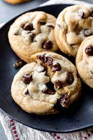

Cookie Recipe

Description
Today we are going to learn how to properly bake chocolate cookies.
Needed Ingredients
- 1 cup of butter(2 sticks), softened
- 3/4 cup of granulated sugar
- 3/4 cup of packed light brown sugar
- 1 tsp of vanilla extract
- 2 eggs
- 2 1/4 cups of all purpose flower
- 1 tsp of baking soda
- 1/2 tsp of salt
- 2 cups of Hershey milk chocolate chips
- 1 cup of chopped nuts
Steps
- Pre-heat oven to 375F
- Beat butter, granulated sugar, brown sugar and vanilla in large bowl with mixer until creamy. Add eggs; beat well. Stir together flour, baking soda and salt; gradually add to butter mixture, beating until well blended. Stir in chocolate chips and nuts, if desired. Drop by teaspoons onto ungreased cookie sheet
- Bake 8 to 10 minutes or until lightly browned. Cool slightly; remove from cookie sheet to wire rack. Cool completely. Makes about 5 dozen cookies.